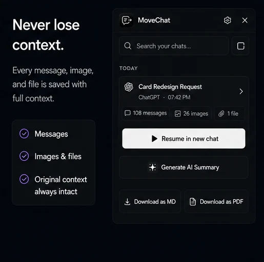

Personal Knowledge Management (PKM) tools like Obsidian, Logseq, and Notion have transformed how developers and researchers store notes. When you solve a difficult Kubernetes bug or draft an essay outline with ChatGPT, you want that output filed in your local folder hierarchy alongside your code and daily logs.
Markdown is the gold standard format for this:
- Future-proof: Plaintext
.mdfiles will remain readable decades from now regardless of what happens to any proprietary AI web app. - Fenced Code Blocks: Preserves language syntax tags, proper tab indentation, and backticks.
- Instant Searchability: Fast full-text grep search across thousands of saved chats on your local disk.

Why OpenAI's Native Export Falls Short for Daily Notes
OpenAI allows you to export your data via Settings → Data Controls → Export Data. However, this process has significant drawbacks for note-taking:
- It exports your entire account history in a single batch, not individual active chats.
- It arrives as a ZIP archive containing a massive
conversations.jsonfile. - Inside the JSON, messages are stored in an abstract mapping tree. Reading or copying a single conversation requires writing a custom Python parsing script.
When you finish a productive session, you do not want an email delay and a 50 MB JSON dump. You want a single, clean my-conversation.md file downloaded to your desktop right away.
What Ideal Markdown Export Looks Like
A well-structured AI conversation export needs more than just raw text. It should include YAML frontmatter for note organization, clear headings for speaker roles, and properly fenced code blocks:
---
title: "Configuring PostgreSQL Connection Pooling with PgBouncer"
date: 2026-10-06
platform: ChatGPT
model: GPT-4o
tags:
- ai-archive
- postgres
- devops
---
## User
How do I configure connection pooling for a high-traffic Node.js API with PgBouncer?
## Assistant
Here is the recommended configuration layout for transaction pooling:
```ini
[databases]
mydb = host=127.0.0.1 port=5432 dbname=production
[pgbouncer]
listen_port = 6432
listen_addr = 0.0.0.0
auth_type = scram-sha-256
auth_file = /etc/pgbouncer/userlist.txt
pool_mode = transaction
max_client_conn = 1000
default_pool_size = 20
```How to Export to Markdown in 1 Click with MoveChat
MoveChat was built to make this process immediate and frictionless.
-
Open the extension on your chat
Navigate to any conversation on
chatgpt.com,claude.ai, orchat.deepseek.com. Open MoveChat in your toolbar and click Capture this session. -
Click "Download as Markdown"
In the MoveChat popup export options, click Download as Markdown (.md).
-
Save to your Obsidian or notes directory
MoveChat generates the file instantly on your device with clean metadata, preserved headers, and code fences intact.
Export AI chats to your Obsidian vault effortlessly
Save ChatGPT, Claude, and DeepSeek threads directly as Markdown or PDF files with one click.
How to Organize AI Chats in Obsidian
Once you have your .md export files, here are a few best practices for maintaining an organized Obsidian vault:
- Create a dedicated folder: Set up a folder named
AI Archives/in your vault root so raw conversations do not clutter your daily notes. - Use Backlinks: In your main project note, link to the discussion using
[[AI Archives/2026-10-06 Postgres Pooling]]. - Filter with Dataview: Use the popular Obsidian Dataview plugin to generate dynamic tables of past AI sessions sorted by tag or date.
Frequently Asked Questions
Does MoveChat preserve LaTeX math formulas in Markdown?
Yes. Math expressions are rendered using standard dollar sign delimiters ($...$ for inline and $$...$$ for display equations), which Obsidian and GitHub parse natively via MathJax/KaTeX.
Can I export Claude conversations to Markdown as well?
Yes. MoveChat works across Claude, ChatGPT, Gemini, Perplexity, and DeepSeek, producing consistent Markdown formatting across all platforms.
Is any data uploaded to a third-party server during export?
No. All parsing and Markdown generation occurs locally within your browser tab. Your files are saved directly to your local file system.